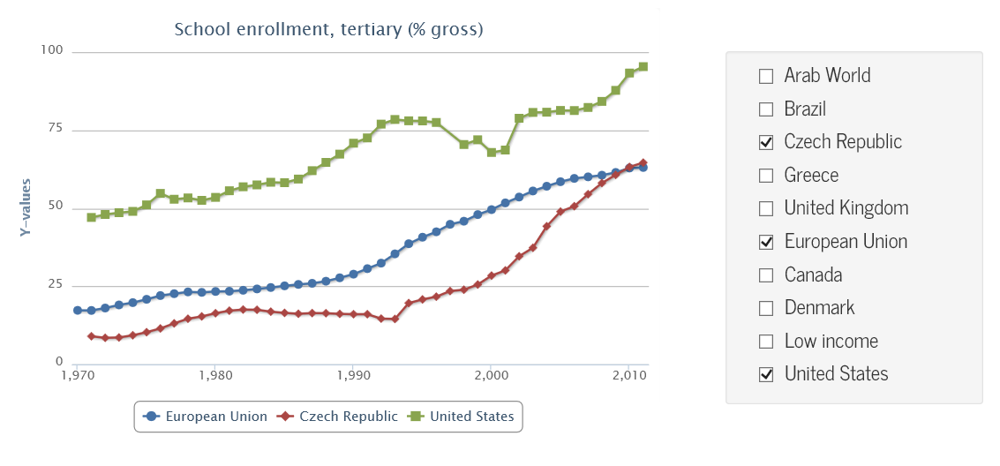
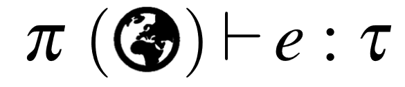

In the age of the web Typed functional-first programming revisited
Most programming languages were designed before the age of web. This matters because the web changes many assumptions that typed functional language designers tak for granted. For example, programs do not run in a closed world, but must instead interact with (changing and likely unreliable) services and data sources, communication is often asynchronous or event-driven, and programs need to interoperate with untyped environments like JavaScript libraries.
For dynamically-typed languages, the changing assumptions are not such a big issue (and e.g. Clojure with ClojureScript adapt extremely well), but how should statically-typed programming languages adapt to the modern world? In this article, I look at one possible answer that is inspired by the F# language and various F# libraries. In F#, we use type providers for integration with external information sources and for integration with untyped programming environments. We use lightweight meta-programming for targeting JavaScript and computation expressions for writing asynchronous code.
This blog post is a shorter version of a ML workshop paper that I co-authored earlier this year and you should read this more as a position statement. I'm not sure if F# and the solutions shown here are the best ones, but I think they highlight very important questions in programming language design that I very much see as unsolved.
The article has two sections. First, I'll go through a simple case study showing how F# can be used to build a client-side web app. Then, I'll discuss some of the implications for programming language design based on the example.
Case Study: Web-based data analytics
We write a web application, which lets the user compare university enrollment in a number of selected countries and regions around the world. The result runs as JavaScript and fetches data dynamically from the World Bank. The demo is simple and works with just a single data source, but it is a realistic app that could be built in context like data journalism to accompany an article. You can run the demo live on the FunScript web site. Here, I'll use a slightly modified version to better illustrate the issues. It builds a dashboard like this one:
Accessing World Bank data with type providers
The dashboard shows university enrollment and lets the user choose among a number of pre-defined countries. The list of countries is generated from a list in the source code that accesses countries using the WorldBank type provider from the F# Data library. The type provider exposes the individual countries as members of an object:
1: 2: 3: 4: 5: 6: 7: 8: |
|
The type provider connects to the World Bank and obtains a list of countries at compile-time and at edit-time (when using auto-completion in an editor). This means that the list is always up-to-date and we get a compile time error when accessing a country that no longer exists.
On the first line, we provide a static parameter Asynchronous to instruct the
type provider to generate only non-blocking operations. This is necessary for a
web-based application, because JavaScript only supports non-blocking calls (using
AJAX callbacks) to fetch the data.
Interoperating with JavaScript libraries
To run the sample application on the client-side we use FunScript, which is a library that translates F# code to JavaScript. Aside from running as JavaScript, we also want to use standard JavaScript libraries, including jQuery for DOM manipulation and Highcharts for charting. FunScript comes with a type provider that imports TypeScript definitions for JavaScript libraries (the latest version of FunScript uses code generation rather than type providers for technical reasons):
1: 2: |
|
The d.ts files are type annotations created for the TypeScript language.
Here, the type provider mechanism lets us leverage an existing effort for annotating common JavaScript
libraries. The type provider analyses those definitions and maps them into F# types named j and
h that contain statically typed functions for calling the JavaScript libraries.
We use these to generate checkboxes that appear on the right.
1: 2: 3: 4: 5: 6: 7: 8: 9: |
|
To manipulate the DOM, we are using the jQuery library in a way that is very similar to code that one would write in JavaScript. Note that members like \ident{append} and \ident{attr} are standard jQuery methods and the compiler sees them as ordinary object members (this blog is using F# Compiler Service and so you can hover over the identifiers and see the same tooltip that you would see in any F# editor).
Although the jQuery library is not perfect, it is a de facto standard in web development. The FunScript type provider makes it possible to integrate with it painlessly without explicitly specifying any FFI interface and without manual wrapping.
Note that we use a standard F# function \ident{List.map} to iterate over the countries. The function passed as an argument has a side-effect of creating the HTML elements, but it also returns a new list. The result is a list of `string Indicators jQuery$ values representing the country name, its indicators (for accessing the World Bank data) and the created DOM object representing the checkbox.
Loading data and updating the user interface
The main part of the sample program is a function render that asynchronously fetches
data for selected countries and generates a chart. To keep the code simple, we iterate over the
`infos list from the previous section and load data for countries one by one:
1: 2: 3: 4: 5: 6: 7: 8: 9: 10: 11: 12: 13: |
|
We're using F# asynchronous workflows to fetch the data without blocking - when
accessing the value of the School enrollment, tertiary (\% gross) indicator,
we use the let! keyword. The indicator is a member exposed by the WorldBank type
provider as an asynchronous computation (as requested by the static parameter).
The rest of the code is mostly dealing with the DOM and the Highcharts library using the API
imported by FunScript -- we iterate over all checkboxes and generate a new chart series for each
checked country.
Two notable points here are that async translated to JavaScript is restricted to a single
thread, which is not the case for ordinary F# code and that the HighchartOption
object preserves some of the underlying JavaScript semantics - we create an empty
array o.series and then add elements to it using o.series.push which would
not be possible in ordinary F# code.
Finally, the last part of the example code registers event handlers that redraw the chart when the checkbox is clicked:
1: 2: |
|
The click operation (exposed by jQuery) takes a function that should be called when the
event occurs. Calling it is a side-effectful operation that registers the handler. As render
is an asynchronous operation, we invoke it using the StartImmediate primitive from the
F# library, which starts the computation without waiting for the result (the only way to start
a non-blocking operation in JavaScript).
Analysis: Learning from the case study
The case study is quite simple, but it shows that you can build a simple interactive visualization in just 30 lines of F#. It also illustrates many of the important issues that we face when working with the web. There are a number of good things that we get to keep from statically-typed functional-first programming style:
- Type inference and static typing can be extended from closed-world data types to open-world types. The sample is statically checked (including data from the World Bank) without explicit type annotations and the type information is also available in the editor for exploration.
-
Nice functional constructs (lists, higher-order functions like
map) from F# can be used for client-side web development - they get translated to JavaScript and run in the browser. - We can also use F# features like asynchronous workflows for writing non-blocking code (for requesting data from the World Bank) without error-prone explicit callbacks.
- We are able to (relatively) painlessly call Highcharts and jQuery. No explicit wrapping or importing of individual functions and types was necessary. Despite the differences between the F# and JavaScript object model, the code is close to idiomatic F#.
There are also a few things that are a bit unexpected when you look at the example through the perspective of traditional statically-typed languages:
- The World Bank type provider lifts information about countries to the type level. If Czech Republic disappears from the world, the code will no longer compile.
- The TypeScript language is unsound and so importing types from TypeScript could introduce an unsoundness into the F# code.
- When compiling F# to JavaScript, the FunScript library does not fully preserve the semantics of F#. For example, numerical types behave as in JavaScript and asynchronous workflows run on a single thread.
The approach that you can use with F# often has both positive and negative side. For example, we can easily access data from World Bank, but it means that we have to give up some of the safety properties. The approach highlighted here is just one possible and the case study shows that it works in practice, but there might be other options.
I want to spend the rest of this section discussing some of the important implications for the design of statically-typed programming languages of the future. If languages want to provide the user experience showed in the above case study, what do they need to look like?
Integrating with external data sources
Statically-typed programming langauges are designed with the assumption that the program runs in a world that is closed - all we can call and access comes from a library that is defined within the world of the language. This is not the case. Even before the web, applications need to perform I/O, but the web makes this even more obvious. In terms of programming language theory, the starting point of a programming language needs to change as follows:
 (Type providers)
The syntax \(\Gamma \vdash e : \tau\) denotes that a program \(e\) has a type \(\tau\) in a context defined by \(\Gamma\). The context typically contains variables, library functions and so on. With type providers, the context is much richer - a type provider is like a projection \(\pi\) that can import anything from the outside world into the programming language context.
The World Bank provider is
an interesting example - it is designed for one specific data source (in contrast to the
XML, JSON and CSV type providers). The projection it implements generates a type Countries
with individual countries as members. Each country returns a value of Indicators that
is also generated and it contains all World Bank indicators as members. The type provider
is erased during compilation and replaced with runtime implementation as follows:
1: 2: 3: 4: 5: |
|
The underlying operations (GetCountry, AsyncGetIndicator) are normal functions
of an underlying runtime library. The type provider generates a light layer on top
of this runtime library. An important thing is that the type provider generates code
that refers to the country and indicator using a code (even though the type we see
uses a more friendly name). Knowing this helps us understand the properties of the
type povider:
-
If you are editing or compiling code that uses the type provider offline, the type provider will not be able to obtain the list of countries and indicators and so the projection \(\pi\) will fail (although the World Bank provider caches the schema on the first use).
-
When a country or indicator is renamed, the compiled code will continue to work, because the code still exists. However, recompilation will fail as the member name will be different.
-
If a country or indicator disappears, we will get a runtime failure when running existing compiled code. However, we will also get a type-checking error when recompiling the code - this is useful, because it prevents us from compiling code that would not work at runtime.
Using type providers to access external data certainly relaxes traditional type
safety conditions. However, rather than introducing new unsafety, this just makes
existing issues more apparent - if we wrote data.GetCountries().GetCountry("CZE"),
we would get the same runtime error if Czech Republic disappeared. With type
providers, this is now reflected in the type system, but with a twist that the
type safety depends on the external data source.
Integrating with external environments
The case study uses type providers not just for external data sources, but also for integration with external execution environments - in particular, for importing definitions of JavaScript libraries. Another example of this kind of use is the R type provider that allows F# programs to call R functions.
The TypeScript type provider makes it possible to use jQuery and Highcharts almost
as if they were native F# libraries, but the word almost is important here, because
there is always going to be some mismatch between F# and any other external environment.
Let's look at a part of the jquery.d.ts file that defines TypeScript types for jQuery:
1: 2: 3: 4: 5: 6: 7: 8: 9: |
|
The snippet defines a global variable jQuery which is an invokable object
that returns JQuery value with an overloaded attr method. When mapping this
to F#, we have to solve the following issues:
- Type providers cannot provide global variables and so TypeScript type provider exposes global variables as static members
-
F# does not support invokable objects and so the type provider generates an
explicit
Invokemethod which is mapped to object invocation. - F# does support optional parameters and overloads, so those are mapped to the F# equivalent (but if we were in, say, Haskell, we would have to do something else here).
With F# used as the host language, we are quite fortunate, because we get many functional language features but also many object-oriented features. This means that when mapping external environments into F#, there is often a corresponding construct in F#. However, there are still things that cannot be expressed in F# and for those, we have to find alternative encoding.
Alternatives for environment integration
There are two alternatives for interoperating external worlds that you can find in other X-to-JavaScript compilers:
-
Explicit mapping. If we want to call some JavaScript function, we have to provide an explicit mapping for it. We define an F# stub (it could be a function with no body or an interface) that is then mapped to JavaScript. This could use annotations (.NET attributes) or follow some convention. In FunScript, you get this with the
JSEmitattribute and it is useful for small snippets, but it hardly scales for anything as large as jQuery. -
Minimal mapping. An interesting option that some X-to-JavaScript compilers use is to mostly ignore the target environment. Instead, they map many source X libraries into JavaScript and would rely only on core DOM (with a wrapper written in X on top of it) rather than on JQuery which would not be idiomatic X library.
I believe that modern programming languages will increasingly need to be able to access external environments and so the F# approach with type providers is an important direction. After all, we need to access rich visualization libraries built in the JavaScript environment or rich statistical functionality available in R.
Mixing stronger and weaker type systems
Another interesting issue that becomes apparent in the case study is that we are mixing the F# type system with a type system of TypeScript. Now, the TypeScript type system is deliberately unsound. Does this mean that we are breaking the soundness of F# too? This is not really happening directly in this case, because we are just importing TypeScript library definitions - but a JavaScript library we are calling can certainly return an unexpected value.
In a heterogeneous environment, we will always be mixing type systems that have different strength or expressivity.
-
Weaker target type systems. When interoperating with a weaker type system, a type provider may need to map more types to a general type like
objin F#. This makes the provided operations harder to use because the target language allows more flexibility. In our example, TypeScript has a typeanythat can be used in any context - F# does not allow this and so we had to explicitly use the unsafeunbox<bool>to treatobjasbool. -
Stronger target type sytems. If the imported language has stronger type system than F#, the type provider will have to drop some information. This can be done safely when reading information, but not when passing values to the target language (in that case, the type provider would have to generate additional runtime checks).
When interoperating with another environment, there will always be some mismatch.
We either need to reconstruct some information (e.g. using jquery.d.ts annotation
file), or through some other mechanism (R provider uses runtime reflection).
With F#, we have the obj type and unsafe features like unbox, so this gives
us at least some way of encoding unsafe operations, but arguably, having
something akin to C# dynamic would sometimes be useful.
Heterogeneous execution
Finally, the last interesting aspect of the case study is that we were able to
use a large number of standard F# language features and libraries even though
the code was translated and executed as JavaScript and the JavaScript semantics
differ in a number of ways. For example, we used ordinary F# async workflows
and wrote:
1: 2: 3: 4: 5: 6: 7: 8: 9: |
|
Strictly speaking, F# asynchronous workflows cannot be translated to JavaScript.
They run in parallel and are scheduled using thread pool, which is not available
when running code as JavaScript and they have other properties (they can capture
SynchronizationContext of the thread, etc.)
The alternative would be to define a JavaScript-based version of asynchronous
workflows, say jsasync { .. } and require the developer to write code using this
semantically correct version instead. This makes the code clumsier, but arguably
more correct. However, the semantic differences with JavaScript go much further.
JavaScript has different exceptions and even different numerical type. To be fully
correct, we'd have to use jsfloat, jsexception and so on!
The example in the case study follows the less correct path - it maps ordinary
F# async workflows to the closest thing that can be done in JavaScript. It
provides mapping for Async.StartImmediate (which has close equivalent in the
browser) but not for Async.Start (which would require a background thread).
F# numerical types are mapped to native JS numerical types with all the potential
issues this brings (floating point numbers use JavaScript semantics). Also, F#
arrays are mapped to JavaScript arrays, which allows us to use some of the JavaScript
semantics and use o.series.push to append element to an array (which cannot be
done in pure F#).
Conclusions: Languages for the modern age
This article uses the "age of the web" phrase, because it nicely illustrates many of the important problems that modern languages face. More than before, we need to access data and call services from the outside world (that cannot be fully trusted) and we need to interoperate with other execution environments (which have different features and different levels of safety).
Programming languages that we use today were not designed with these constraints in mind. They assume that programs live in a closed world (where everything has been created in the same langauge or comes from the same runtime).
Integrating with the open world is much easier for dynamically-typed languages like Clojure with ClojureScript. In the world of statically-typed languages, the situation is much harder - and I think that the F# type provider mechanism is the first step towards languages that give the useful benefits of (smart) static type systems while being a good fit for solving problems that come with modern kinds of applications.
Going over the case study and the analysis, I think there are two key points.
Flexibility with escape options
First, when we want to interoperate with outside environments, the host language needs to provide a lot of flexibility. In case of F#, you get support for both functional and object-oriented style. This means that more of the outside world can be mapped to a close construct in the F# world. I believe that this is crucial - a language can practically interoperate with the outside world if the mapping is not too cumbersome.
The other aspect is that if the host language is strict in some way, it needs to
provide some escaping mechanism. F# does this with the obj type and unbox.
This works, but there is probably more that could be done here. (And there are
also other situations where an escape mechanism would help.)
Relativized safety and semantics
Does the flexibility and the escaping hurt the nice safety properties of the host language? If you are a strict theoretician, then the answer is of course yes. But I think there is a useful middle ground here. Using F# as we did in the case study here, we get a nice property:
When you use the core subset of F#, the program will behave according to the usual core F# semantics and you are guaranteed the usual core F# properties. Using non-core features in other environments may have different semantics and different properties.
To an extent, you can already see this with F# when working with .NET. F# types
do not allow the null value, but .NET types do. When you use functional style
with F#, you do not need type annotations, but when you use objects, you do.
So for F#, even .NET is an outside environment that breaks some of the language
properties.
Summary
I think we need to give up on the idea that programming languages should be designed for one controlled execution environment. There should be a core with certain core properties (like the ML core of F#) with additional layers that are more flexible and adaptable to allow running in the heterogenous modern world. How exactly this should be done, that's an interesting open question, but I think F# with type providers shows one important component of the solution.
namespace FSharp
--------------------
namespace Microsoft.FSharp
namespace FSharp.Data
--------------------
namespace Microsoft.FSharp.Data
Full name: Typed-revisited.WorldBank
Full name: FSharp.Data.WorldBankDataProvider
<summary>Typed representation of WorldBank data with additional configuration parameters</summary>
<param name='Sources'>The World Bank data sources to include, separated by semicolons. Defaults to "World Development Indicators;Global Development Finance". If an empty string is specified, includes all data sources.</param>
<param name='Asynchronous'>Generate asynchronous calls. Defaults to false</param>
Full name: Typed-revisited.data
Full name: Typed-revisited.countries
Full name: Typed-revisited.j
Full name: FunScript.TypeScript.Api
Full name: Typed-revisited.h
Full name: Typed-revisited.jQuery
val string : value:'T -> string
Full name: Microsoft.FSharp.Core.Operators.string
--------------------
type string = System.String
Full name: Microsoft.FSharp.Core.string
Api<...>.JQueryStatic.Invoke(selector: string) : Api<...>.JQuery
Api<...>.JQueryStatic.Invoke(element: Api<...>.Element) : Api<...>.JQuery
Api<...>.JQueryStatic.Invoke(elementArray: Api<...>.Element []) : Api<...>.JQuery
Api<...>.JQueryStatic.Invoke(object: Api<...>.JQuery) : Api<...>.JQuery
Api<...>.JQueryStatic.Invoke(func: Api<...>.Function) : Api<...>.JQuery
Api<...>.JQueryStatic.Invoke(selector: string, context: obj) : Api<...>.JQuery
Full name: Typed-revisited.infos
module List
from Microsoft.FSharp.Collections
--------------------
type List<'T> =
| ( [] )
| ( :: ) of Head: 'T * Tail: 'T list
interface IEnumerable
interface IEnumerable<'T>
member GetSlice : startIndex:int option * endIndex:int option -> 'T list
member Head : 'T
member IsEmpty : bool
member Item : index:int -> 'T with get
member Length : int
member Tail : 'T list
static member Cons : head:'T * tail:'T list -> 'T list
static member Empty : 'T list
Full name: Microsoft.FSharp.Collections.List<_>
Full name: Microsoft.FSharp.Collections.List.map
Full name: Microsoft.FSharp.Core.Operators.box
Full name: Typed-revisited.render
Full name: Microsoft.FSharp.Core.ExtraTopLevelOperators.async
new : unit -> HighchartsChartOptions
member alignTicks : bool with get, set
member animation : HighchartsBoolOrAnimation with get, set
member backgroundColor : HighchartsColorOrGradient with get, set
member borderColor : string with get, set
member borderRadius : float with get, set
member borderWidth : float with get, set
member className : string with get, set
member defaultSeriesType : string with get, set
member events : HighchartsChartEvents with get, set
...
Full name: FunScript.TypeScript.Api,files="../files/highcharts.d.ts".HighchartsChartOptions
new : unit -> HighchartsTitleOptions
member align : string with get, set
member floating : bool with get, set
member margin : float with get, set
member style : HighchartsCSSObject with get, set
member text : string with get, set
member useHTML : bool with get, set
member verticalAlign : string with get, set
member x : float with get, set
member y : float with get, set
Full name: FunScript.TypeScript.Api,files="../files/highcharts.d.ts".HighchartsTitleOptions
Full name: Microsoft.FSharp.Core.Operators.unbox
Full name: Microsoft.FSharp.Core.bool
from Microsoft.FSharp.Collections
Full name: Microsoft.FSharp.Collections.Seq.map
from Microsoft.FSharp.Collections
Full name: Microsoft.FSharp.Collections.Array.ofSeq
new : unit -> HighchartsSeriesOptions
member data : obj with get, set
member index : float with get, set
member legendIndex : float with get, set
member name : string with get, set
member stack : obj with get, set
member ``type`` : string with get, set
member xAxis : float with get, set
member yAxis : float with get, set
Full name: FunScript.TypeScript.Api,files="../files/highcharts.d.ts".HighchartsSeriesOptions
type Async
static member AsBeginEnd : computation:('Arg -> Async<'T>) -> ('Arg * AsyncCallback * obj -> IAsyncResult) * (IAsyncResult -> 'T) * (IAsyncResult -> unit)
static member AwaitEvent : event:IEvent<'Del,'T> * ?cancelAction:(unit -> unit) -> Async<'T> (requires delegate and 'Del :> Delegate)
static member AwaitIAsyncResult : iar:IAsyncResult * ?millisecondsTimeout:int -> Async<bool>
static member AwaitTask : task:Task -> Async<unit>
static member AwaitTask : task:Task<'T> -> Async<'T>
static member AwaitWaitHandle : waitHandle:WaitHandle * ?millisecondsTimeout:int -> Async<bool>
static member CancelDefaultToken : unit -> unit
static member Catch : computation:Async<'T> -> Async<Choice<'T,exn>>
static member FromBeginEnd : beginAction:(AsyncCallback * obj -> IAsyncResult) * endAction:(IAsyncResult -> 'T) * ?cancelAction:(unit -> unit) -> Async<'T>
static member FromBeginEnd : arg:'Arg1 * beginAction:('Arg1 * AsyncCallback * obj -> IAsyncResult) * endAction:(IAsyncResult -> 'T) * ?cancelAction:(unit -> unit) -> Async<'T>
static member FromBeginEnd : arg1:'Arg1 * arg2:'Arg2 * beginAction:('Arg1 * 'Arg2 * AsyncCallback * obj -> IAsyncResult) * endAction:(IAsyncResult -> 'T) * ?cancelAction:(unit -> unit) -> Async<'T>
static member FromBeginEnd : arg1:'Arg1 * arg2:'Arg2 * arg3:'Arg3 * beginAction:('Arg1 * 'Arg2 * 'Arg3 * AsyncCallback * obj -> IAsyncResult) * endAction:(IAsyncResult -> 'T) * ?cancelAction:(unit -> unit) -> Async<'T>
static member FromContinuations : callback:(('T -> unit) * (exn -> unit) * (OperationCanceledException -> unit) -> unit) -> Async<'T>
static member Ignore : computation:Async<'T> -> Async<unit>
static member OnCancel : interruption:(unit -> unit) -> Async<IDisposable>
static member Parallel : computations:seq<Async<'T>> -> Async<'T []>
static member RunSynchronously : computation:Async<'T> * ?timeout:int * ?cancellationToken:CancellationToken -> 'T
static member Sleep : millisecondsDueTime:int -> Async<unit>
static member Start : computation:Async<unit> * ?cancellationToken:CancellationToken -> unit
static member StartAsTask : computation:Async<'T> * ?taskCreationOptions:TaskCreationOptions * ?cancellationToken:CancellationToken -> Task<'T>
static member StartChild : computation:Async<'T> * ?millisecondsTimeout:int -> Async<Async<'T>>
static member StartChildAsTask : computation:Async<'T> * ?taskCreationOptions:TaskCreationOptions -> Async<Task<'T>>
static member StartImmediate : computation:Async<unit> * ?cancellationToken:CancellationToken -> unit
static member StartWithContinuations : computation:Async<'T> * continuation:('T -> unit) * exceptionContinuation:(exn -> unit) * cancellationContinuation:(OperationCanceledException -> unit) * ?cancellationToken:CancellationToken -> unit
static member SwitchToContext : syncContext:SynchronizationContext -> Async<unit>
static member SwitchToNewThread : unit -> Async<unit>
static member SwitchToThreadPool : unit -> Async<unit>
static member TryCancelled : computation:Async<'T> * compensation:(OperationCanceledException -> unit) -> Async<'T>
static member CancellationToken : Async<CancellationToken>
static member DefaultCancellationToken : CancellationToken
Full name: Microsoft.FSharp.Control.Async
--------------------
type Async<'T>
Full name: Microsoft.FSharp.Control.Async<_>
new : unit -> HighchartsOptions
member chart : HighchartsChartOptions with get, set
member colors : string [] with get, set
member credits : HighchartsCreditsOptions with get, set
member exporting : HighchartsExportingOptions with get, set
member ``global`` : HighchartsGlobalOptions with get, set
member labels : HighchartsLabelsOptions with get, set
member lang : HighchartsLangOptions with get, set
member legend : HighchartsLegendOptions with get, set
member loading : HighchartsLoadingOptions with get, set
...
Full name: FunScript.TypeScript.Api,files="../files/highcharts.d.ts".HighchartsOptions
o.title <- h.HighchartsTitleOptions(text = head)
o.series <- [| |]
[| number k; number v |]) |> Array.ofSeq
Published: Wednesday, 9 September 2015, 5:14 PM
Author: Tomas Petricek
Typos: Send me pull request!
Tags: f#, type providers, web, functional programming, research